Overview
Acute stroke splits two ways — an infarct or a bleed — and the treatments are opposites. Give a thrombolytic to someone who is bleeding and you make it worse. The scan that answers the question usually exists; a subspecialty reader to interpret it often doesn't. BrainArch runs entirely on a hospital's own workstation, marks candidate lesion regions on the source slice, and draws the boundary so the reviewer can see precisely what was flagged. Its pitch is deliberately modest: localise, then review.
I led design and branding. That covered the identity kit following the rebrand from STELLA.ai, a one-minute intro film with its four key images, and the demo landing page — which I designed and then built. It also meant working across the white paper and technical documentation with the AI lead and marketing, because the product's own claims turned out to be the hardest design problem on the project.
Identity
The product arrived carrying another product's name. BrainArch is a rebrand of STELLA.ai, so the first deliverable was an identity that could stand on its own and still sit correctly beside the W Labs mark. The palette is built around a single diagnostic red — Lesion Red, reserved exclusively for boundary overlays and never used decoratively — over a cool, instrument-like set of navies and steels.
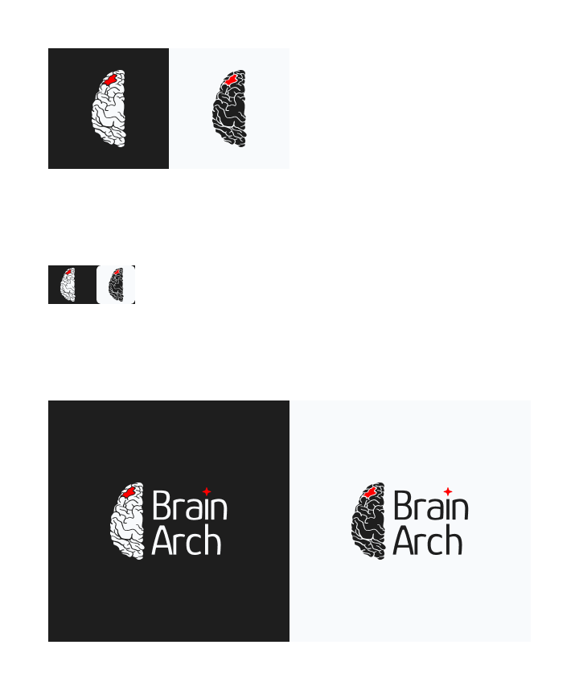
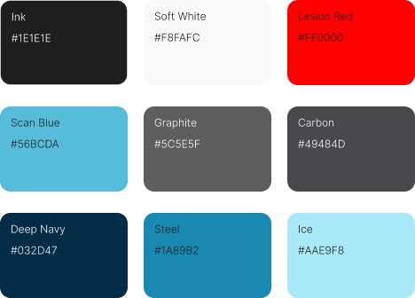
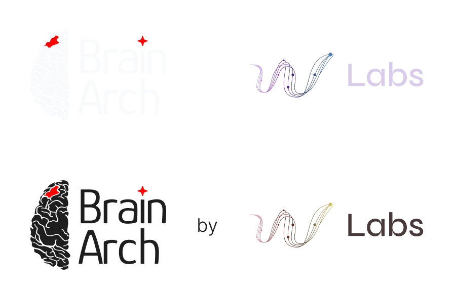
Wordmark construction · typeface modification with an added AI element
The film, built as code
A sixty-second intro film — and not one frame of it was edited in a timeline. Every typographic card is rendered from a copy table through headless Chrome, the background plates are generated, and the assembly, crops and timings run from a build script. Changing a line of narration means editing a string and rebuilding, not re-cutting.
That decision paid for itself twice. The 1:1 LinkedIn cut is rebuilt rather than cropped, so the type is composed for the square rather than squeezed into it; and both formats land at exactly 60.000 seconds. The released cut is silent by design — the on-screen type carries all the language, so a muted autoplay in a feed loses nothing.
BrainArch intro film · 60s · scripted, rendered and assembled as code
Key images
Four stills to carry the product where the film couldn't follow — the press kit, the white paper, and the landing page. Each was produced at web and 300 dpi print sizes, with a pixel-level guard in the build that refuses to ship a frame containing deny-listed UI.
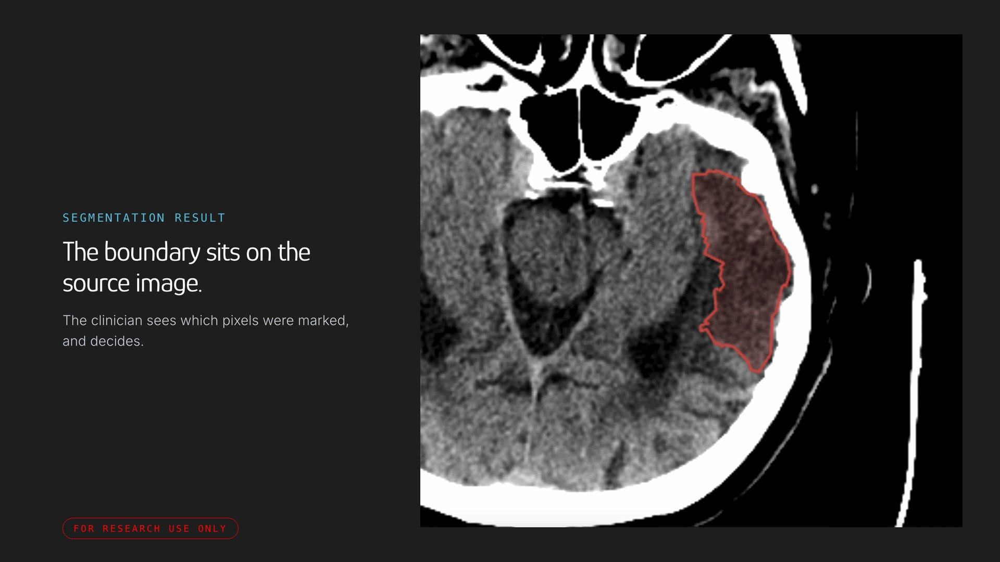
Analysis result · lesion boundary on the source slice
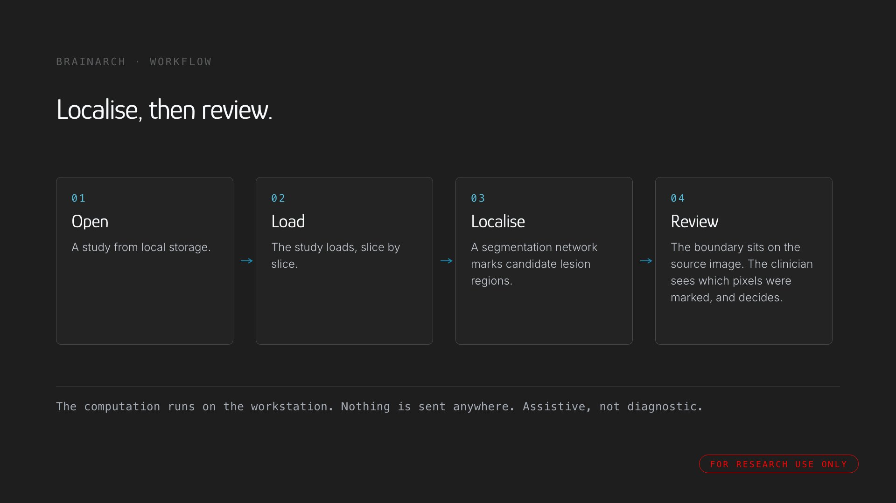
Workflow · five stages
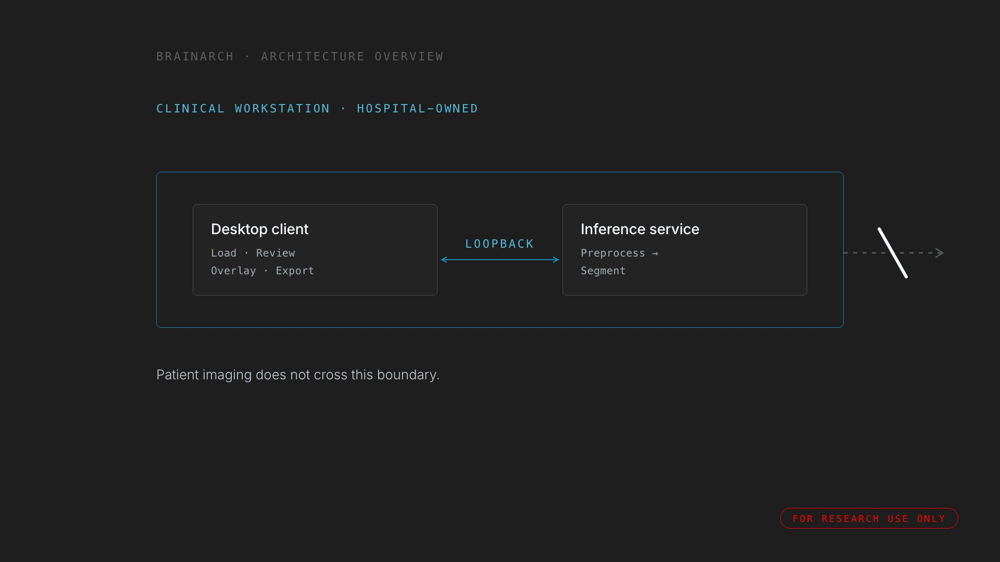
Architecture · everything inside the workstation
The product surface
The analysis board the marketing had to represent honestly. Scans shown are de-identified study records — the tool is research use only and is not a cleared medical device, and nothing in this project was cleared to make diagnostic or clinical-benefit claims.
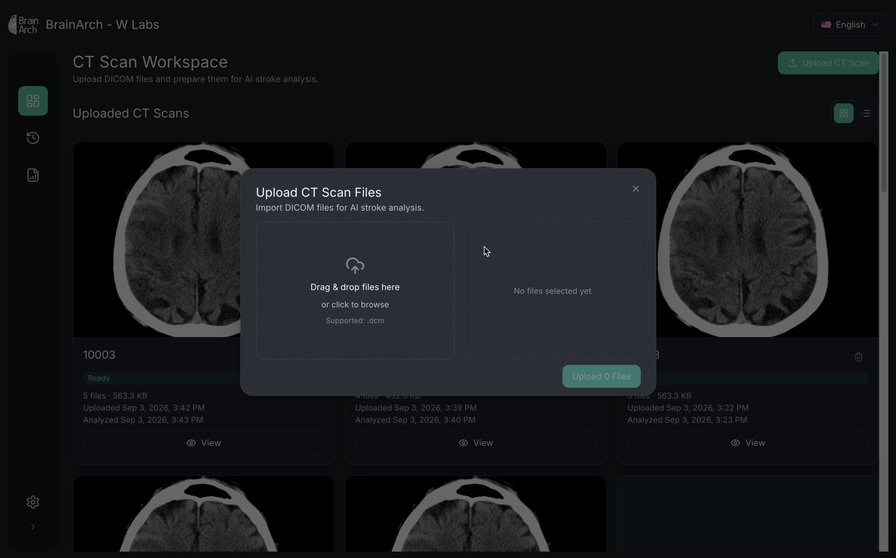
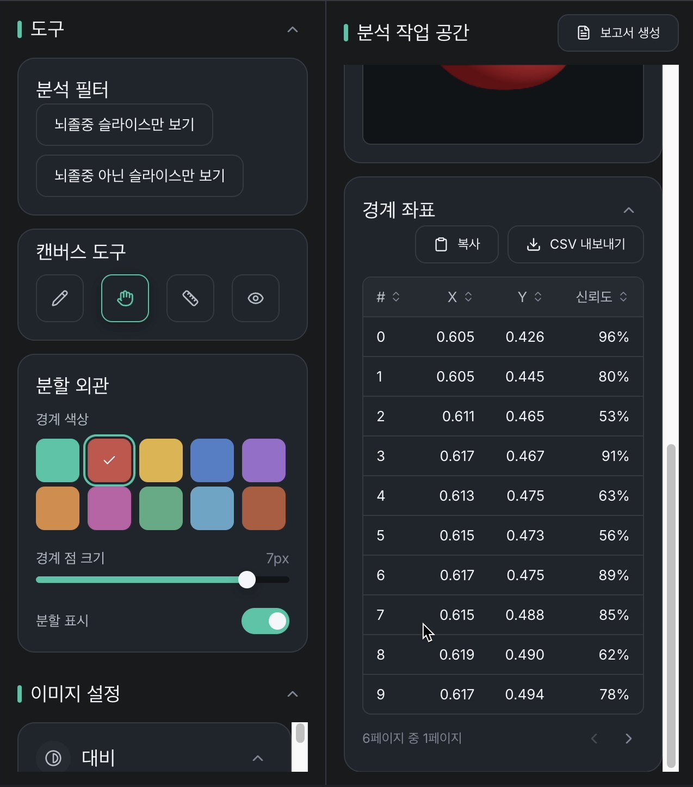
Demo landing page
Designed across three fixed canvases — 1440, 744 and 393 — then built as a single self-contained page with no framework and no build step. The 393 breakpoint is treated as a ceiling rather than a target, so narrower phones compress instead of clipping. Ticket BA-5 covered the design; I split the build out into BA-11 and took that too.
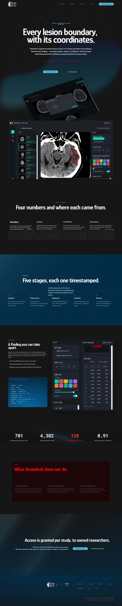
The same page at each canvas, shown at their true relative widths. Tablet keeps the horizontal rhythm but drops to a single evidence column; mobile collapses the nav to a sheet and re-flows the hero so the claim still lands above the fold. Nothing is hidden between breakpoints — the content order is identical, only its density changes.
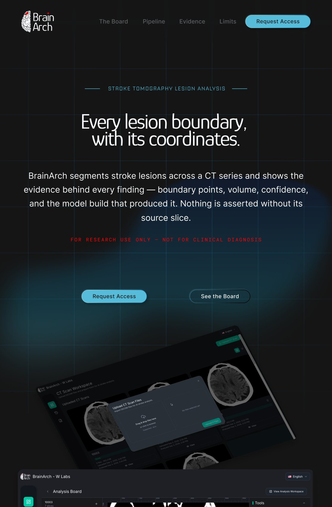
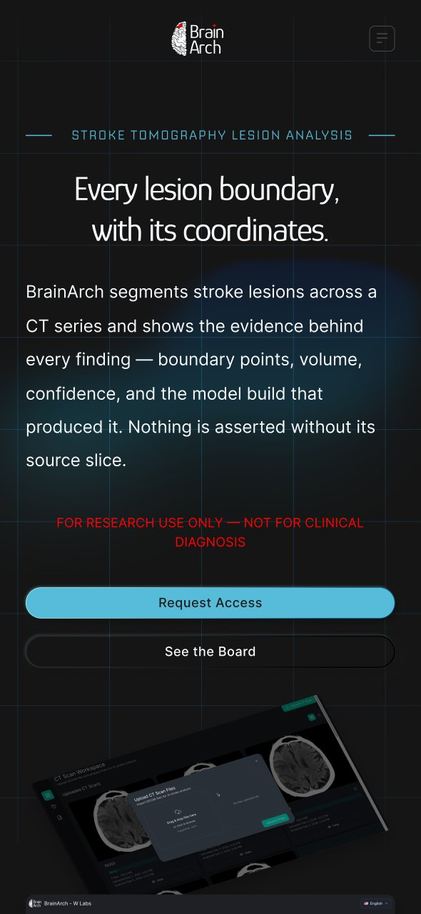
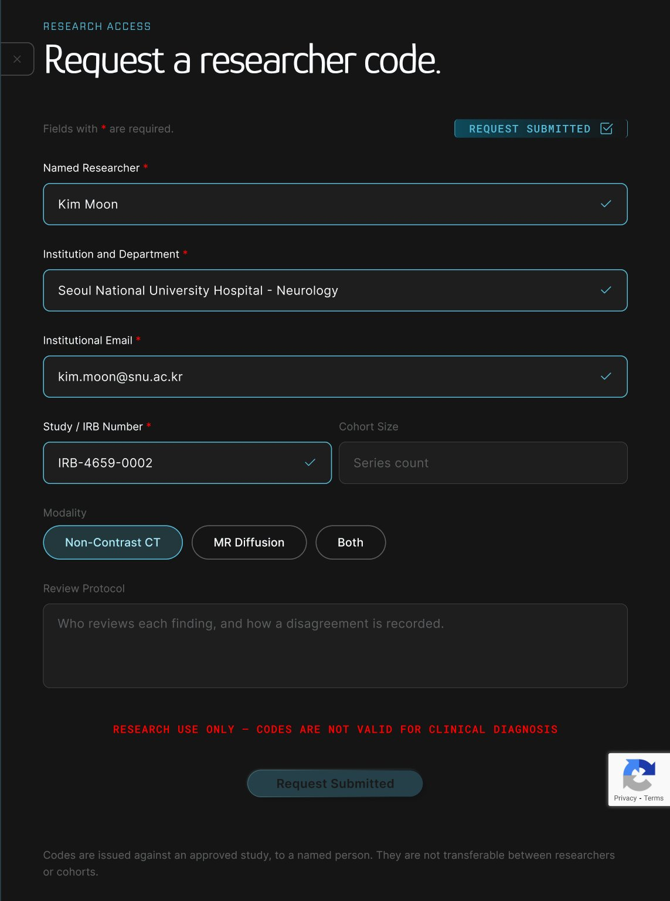
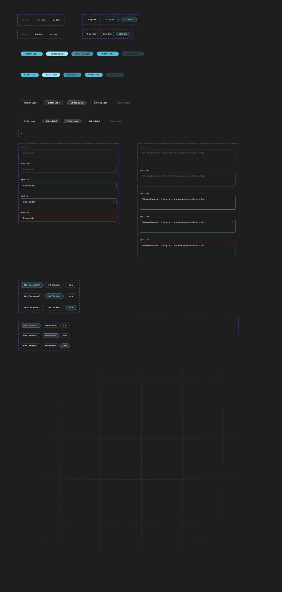
Component library · buttons, inputs, chips, validation and video states
When the product hasn't decided what it is
Partway through, the pieces stopped agreeing. The white paper promised localise, then measure — density values, an indeterminate result. The application only localises. And the landing page I was designing had drifted toward a third position again: a research instrument offered to named researchers, access by request.
Three artefacts, three different products. That isn't a copy problem, and no amount of careful wording fixes it — a marketing surface can't be more certain than the thing it describes. I raised it jointly with the AI lead to the CEO and PM rather than designing around it quietly. The shipped page still carries a small number of claims that outrun what the tool demonstrably does, and they're documented rather than buried.
The useful lesson wasn't about layout. On a product making claims about human physiology, the honest move is to treat a positioning contradiction as a blocker and escalate it — not to absorb it into the design and hope the reader doesn't notice.
Process
Three weeks, start to finish. Milestones are anchored to the project's Jira (project BA) and the #project-brain-arch Slack channel.
Brand identity kit
STELLA.ai became BrainArch. I filed the identity ticket the day the project opened and delivered the lockups, palette and co-brand system — the dependency every later asset was blocked on.
Source material & script
Gathered the raw material from the AI lead, raised what could and couldn't carry over from STELLA, and wrote the film script. The first screen recording didn't match it — so it was re-shot rather than written around.
Film & key images
Sixty seconds in two formats, plus four key images at web and print sizes. A licensing review on the first music bed sent it back — the replacement was commissioned and approved, and licence clearance became a hard gate in my process rather than a final check.
Landing page — design, then build
Three breakpoints designed as fixed canvases, then built to match within about a pixel. The positioning mismatch between white paper, app and page surfaced here and was escalated rather than absorbed.
Outcome
The launch set shipped in three weeks: an identity kit, a sixty-second film in two formats with captions and posters, four key images at web and print sizes, and a demo landing page designed and built across three breakpoints. The page is complete and awaiting deployment.
There are no adoption numbers to report, and there shouldn't be — BrainArch is a research instrument that hasn't launched commercially. What the project produced instead was a clearer position: a product that says here is the boundary we drew, you decide is a more defensible thing to market than one claiming to know the answer.